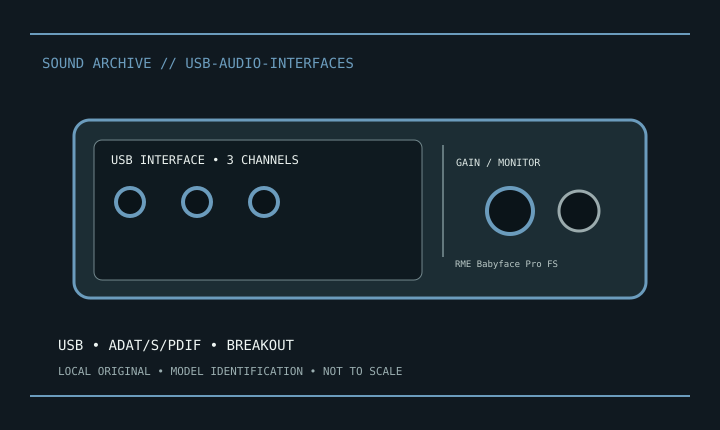

[ INDIVIDUAL MODEL // SOUND HARDWARE ]
RME Babyface Pro FS
USB 2 bus-powered interface, 2 XLR mic/line and 2 line/instrument inputs, outputs/headphones, breakout cable, optical ADAT/S/PDIF; up to 192 kHz.

Model-specific specifications
| Exact model / scope | RME Babyface Pro FS. Preserve breakout cable, TotalMix snapshots, firmware, optical mode and individual phantom status. |
|---|---|
| Bus / host | USB; connector, protocol and bus-power details are specified in the product record above. |
| Documented functions / connectors | USB 2 bus-powered interface, 2 XLR mic/line and 2 line/instrument inputs, outputs/headphones, breakout cable, optical ADAT/S/PDIF; up to 192 kHz. |
| Conversion / formats | Use the model-specific rate/conversion specifications above and the linked manufacturer guide. |
| Drivers / OS | Use the linked model-specific manufacturer support/manual page. Driver and supported OS availability depends on release; no undocumented OS compatibility is asserted. |
| Power / microphone | Switchable +48 V only on documented mic inputs; follow model manual and disable before repatching. |
Compatibility & preservation
Preserve breakout cable, TotalMix snapshots, firmware, optical mode and individual phantom status.
- Photograph model/revision, connectors and included accessories before service.
- Retain the matching manual, driver/firmware and known-working host/routing configuration.
- Follow documented signal levels, connector pinout and power requirements; physical fit alone is not compatibility.
Manufacturer sources
- Manufacturer product information — RME Babyface Pro FSProduct/model source; match the exact revision and board.
- Manufacturer support and documentationOfficial model documentation, drivers and OS compatibility information.